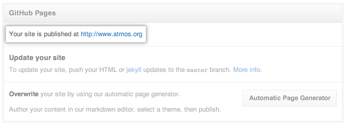

If you're using a custom domain to redirect your GitHub Pages site, you must create and commit a CNAME file to your GitHub Pages repository that contains the custom domain.
After you create a CNAME file, it can take up to 15 minutes for your GitHub Pages site to become available. You'll receive an email if your build is unsuccessful.
- On GitHub, navigate to your Pages repository.
- In the "Branches" menu, switch to your repository's Pages branch:
- For User and Organization Pages sites, the Pages branch is
master. - For Project Pages sites, the Pages branch is
gh-pages.
- For User and Organization Pages sites, the Pages branch is
- Add a new file, named CNAME (with all caps!), to the root directory of the Pages branch.
- In the new file, add a single line that specifies the bare subdomain for your custom domain. For example, use
blog.example.com, nothttps://blog.example.com. Note that there can only be one domain in the CNAME file. - Type a commit message, or accept the default message.
- Under the commit message box, click Confirm merge.
Confirming that the custom domain has been configured correctly
- In your repository's right sidebar, click Settings.

- Under "GitHub Pages", you should see the custom domain from your CNAME file.

Next steps: Configuring DNS settings
After you've created and committed your CNAME file on GitHub, do one of the following with your DNS provider:
- If your custom domain is a subdomain (recommended), configure a
CNAMErecord. - If your custom domain is an apex domain, configure an
ALIAS,ANAME, orArecords.
Examples of real-world CNAME files
The atmos.github.io repository has a CNAME file with the domain www.atmos.org.
- The User Pages site at atmos.github.io redirects to www.atmos.org.
- The Project Pages site at atmos.github.io/warden-github redirects to www.atmos.org/warden-github.
Note how the Project Pages site inherits the domain set for its owner's User Pages site.
The emoji repository has a CNAME file with the domain emoji.muan.co. It is owned by muan, whose User Pages repository has a CNAME file with the domain muan.co.
- The Project Pages site at muan.github.io/emoji redirects to muan.co/emoji and is also available at emoji.muan.co.